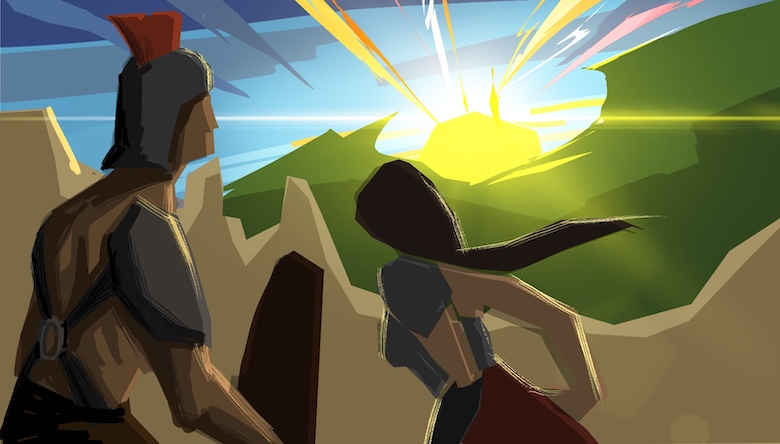

In the year 2807, a dystopian society is born due to the world wars that ravaged the world for hundreds of years, which also destroyed most of the world we know today.
The beautiful society we know today has come to an end. The world is driven back to the Dark Ages as oil and coal were eventually used up in the hundred years of wars. The machines that powered the world were left unusable. Civilised society came to an end as the surviving men killed each other to fend for themselves.
However, some men came together to form war tribes that ran parts of ravaged cities into small towns and eventually turned into small towns and villages.
Eventually, those small towns developed a hierarchy for their inhabitants. The working class was born as societies started to mature once again. As the working class became bored of their daily lives, they pushed for entertainment, resulting in prized fighting. The Roman Coliseum that existed thousands of years ago was brought back to life.
For decades, as tribes still conquered each other, the surviving losers of those wars were turned into gladiators for the victors coliseum. Coliseums became a symbol of wealth and power for the growing towns and cities that displayed the prowess of their tribes. As their societies matured more and more, the coliseum fights became more and more violent as well. Crowds were only pleased by brutal showings and roared as they watched men and women get torn apart by wild beasts or fierce gladiator duels.
However, this would all come to change when a young gladiator named Aprilia was born into those cages. Fighting was all he knew as he was born from a gladiator mother and was trained in combat since he could swing a sword.
At the young age of 6, he saw his very own mother being torn apart by wild beasts in the Coliseum. This fuelled him in his ambition to end this barbaric practice and the barbaric way of life that people lived at that time.
A young Aprilia trained day in and day out every single day. He outworked all the young warriors. Before he slept every day, he remembered his slain mother, and a fire inside him burnt brighter every day.
Eventually, at the age of 10, he was already better than all of the kids. He even started to defeat the older warriors in his camp. At the age of 12, he became the youngest gladiator to win fights inside the arena.
He moved so gracefully with the sword and often mesmerised the crowd with his flashy style. The crown looked at him as the pinnacle of the gladiator fighting they loved so much over the years, but little did they know this young boy would also be the end of it.
Young Aprilia despised killing fellow gladiators. After slaying them, he often kept a memento of the fighter, promising to remember them when he accomplishes his ultimate goal of eradicating brutal gladiator business and bringing peace to society.
At the age of 16, the tribe generals realised his potential as a warrior on their frontlines. The young man was undefeated in man to man combat, and there they were right. Aprilia slew every man before him without a sweat. All the tribe troops came to respect Aprilia.
With Aprilia by their side, all the tribes came to respect their troops in battle, and Aprilia made his way up into a war general. Their tribe became the strongest and also the biggest as they were undefeated in their conquests. The tribe leaders became jealous of Aprilia and his legendary war stories, which the working class loved.
Everyone in the city loved Aprilia. People built statues of him and sang him in songs and ballads. The legends of Aprilia were born, and Tribe leaders feared losing their respect and were overshadowed by Aprilia’s success. The tribe leaders stripped Aprilia of all of his titles and threw him back in the fighting pits. Tribe Leaders were plotting to kill off Aprilia but failed every single time. They matched him against impossible odds, such as matching up Aprilia with a thousand Lions and a thousand young mercenaries, but Aprilia slew them all.
People started to worship Aprilia as they thought he was demi-God as he was unblemished in battles. This angered the Tribe leaders even more, knowing now that just having Aprilia killed was impossible, so they decided to sway the public affection towards the other way against Aprilia and to put Aprilia against women and tied up their children to watch their mothers die.
Aprilia remembered who he was. He used to be one of those kids. He refused to fight. He evaded the attacks but did not fight back. In the turn of events, the crowd silenced and watched the skies as it darkened the sunny day they enjoyed. Aprilia and all the women fighters stopped fighting and looked up to see a meteor unravelling in the clouds. Aprilia closed his eyes and clenched his fist as he felt some sort of magical feeling building up in the palm of his hand. The meteor darkening hit the Coliseum's ground, crashing everything in its path, sending shockwaves across the Earth.
There came to an end the human civilisation, and so did Aprilia dreams and all of the tribe leader’s and everything on Earth. And that was the very last fight in the Coliseum ever as no one is left on this Earth.
Moral of the story: Aprilia got to fulfil the wish he so desired his whole life but not in the form he expected. Humans will never take part in violence ever again as we ceased to exist. True peace is achieved. LOL :)